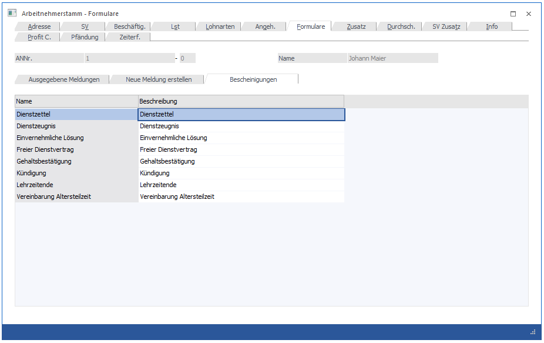
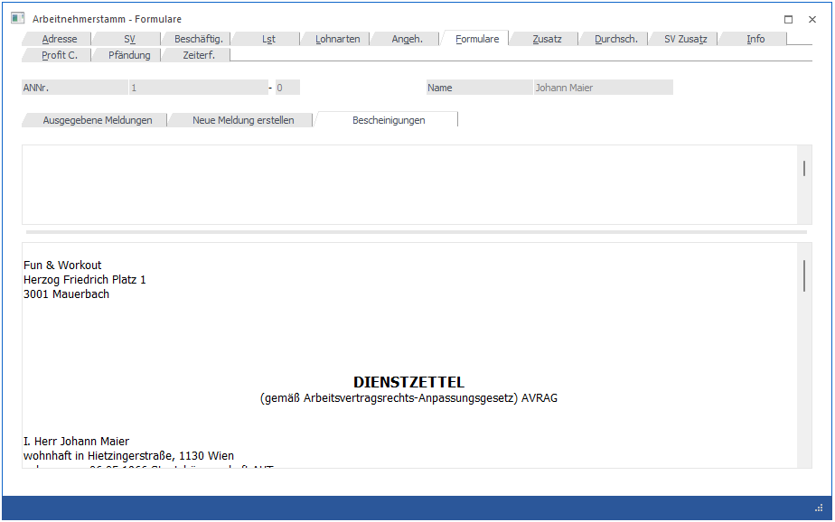

In diesem Register gibt es die Möglichkeit, "Bescheinigungen" auszudrucken, wobei man unter Bescheinigungen jede Art von Ausdrucken verstehen kann, die man dem AN aushändigen kann bzw. die in der Lohnverrechnung benötigt werden. Beispiele dafür:
ü Dienstzettel
ü Dienstvertrag
ü Gehaltsbestätigung
ü Kollektivvertrag
ü Kündigung
ü etc., etc.
Die Basis für den Druck von Bescheinigungen bilden sogenannte Textbausteine, die im Programm WinLine START über den Menüpunkt
1 Optionen
1 Textbausteine
1 Textbausteine
oder Schnellaufruf
1 STRG + T
bearbeitet werden können. In den Textbausteinen können neben freien Texten auch Werte aus der Lohnverrechnung angedruckt werden (wie z.B. Bruttobezug oder dergleichen), sodass es auch möglich ist, z.B. Gehaltsbestätigungen oder dergleichen auszugeben. Details dazu entnehmen Sie bitte dem WinLine START-Handbuch, Kapitel Textbausteine.

Nachdem im AN-Stamm das Register Formulare / Register Bescheinigungen aufgerufen wurde, werden in der Tabelle alle Textbausteine aufgelistet, die für die Lohnverrechnung erstellt wurden. Durch einen Doppelklick auf die gewünschte Bescheinigung wird der Inhalt des Textbausteines statt der Tabelle dargestellt.

Wurden bei der Definition des Textbausteines Variablen (Platzhalter) verwendet, werden diese bei der Darstellung in reale Werte umgewandelt (z.B. Berechnungen werden durchgeführt, Datümer werden gefüllt etc.). In diesem Fenster können alle vorgeschlagenen Texte noch abgeändert werden, wobei diese Änderung nur für den aktuellen AN seine Gültigkeit hat.
Durch Anklicken des Drucken-Buttons wird die Bescheinigung ausgedruckt, wobei auch ein Eintrag in das Journal (siehe auch Kapitel Ausgegebene Meldungen) geschrieben wird. Damit kann diese Bescheinigung auch jederzeit nachträglich nochmals gedruckt werden.